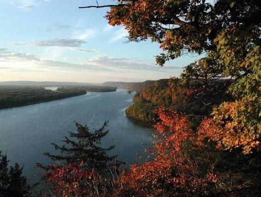

Mississippi ist ein Bundesstaat in den Vereinigten Staaten von Amerika. Er zählt zu den Südstaaten und hat knapp drei Millionen Einwohner
auf einer Fläche von 125.443 km². Die Hauptstadt von Mississippi ist Jackson.
Der Staat hat seinen Namen vom Mississippi River, dessen Name sich aus der Sprache der Anishinabe herleitet und „großer Fluss“ bedeutet. Der Beiname Mississippis
ist Magnolia State – Magnolienstaat.
Quellen- und Lizenzhinweis:
Dieser Text basiert auf dem Wikipedia-Artikel
Mississippi
(geänderte Fassung) und steht unter der Lizenz
Creative Commons Attribution-ShareAlike 4.0 International (CC BY-SA 4.0).
Das Bild ist von
de.wikipedia.org